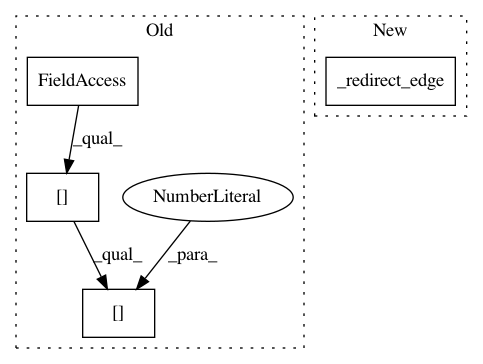

99773d6efd4c081424bdbc3ee9871cdf3e1bdb5c,autokeras/graph.py,Graph,to_add_skip_model,#Graph#Any#Any#,239
Before Change
layer = WeightedAdd()
single_input_shape = get_int_tuple(start.output_shape)
layer.build([single_input_shape, single_input_shape])
self._add_edge(layer, new_node_id, self.adj_list[output_id][0][0], False)
self._add_edge(layer, input_id, self.adj_list[output_id][0][0], False)
self._redirect_edge(output_id, self.adj_list[output_id][0][0], new_node_id)
After Change
layer.build([single_input_shape, single_input_shape])
relu_output_id = self.adj_list[relu_input_id][0][0]
self._redirect_edge(relu_input_id, relu_output_id, new_node_id)
self._add_edge(layer, new_node_id, relu_output_id, False)
self._add_edge(layer, skip_output_id, relu_output_id, False)
return self.produce_model()
In pattern: SUPERPATTERN
Frequency: 3
Non-data size: 4
Instances
Project Name: keras-team/autokeras
Commit Name: 99773d6efd4c081424bdbc3ee9871cdf3e1bdb5c
Time: 2018-01-05
Author: jhfjhfj1@gmail.com
File Name: autokeras/graph.py
Class Name: Graph
Method Name: to_add_skip_model
Project Name: keras-team/autokeras
Commit Name: 387fa1c6e15f338d36714caedca5af5ff8422166
Time: 2018-01-01
Author: jhfjhfj1@gmail.com
File Name: autokeras/graph.py
Class Name: Graph
Method Name: to_concat_skip_model
Project Name: keras-team/autokeras
Commit Name: 16474aee0c575e615c78d32f2a170c3d7f8f0082
Time: 2017-12-30
Author: jhfjhfj1@gmail.com
File Name: autokeras/graph.py
Class Name: Graph
Method Name: to_conv_deeper_model